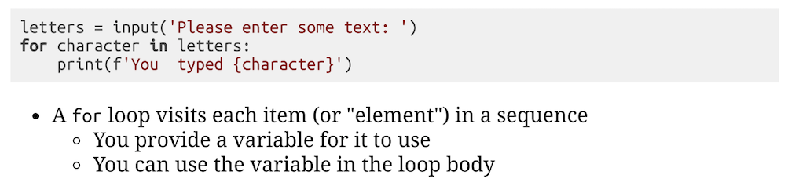
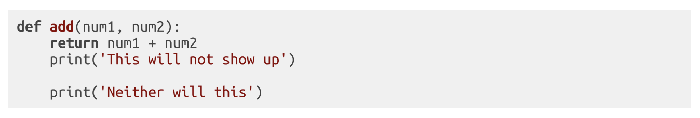
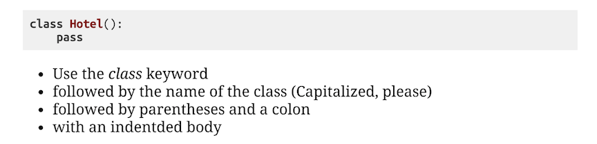
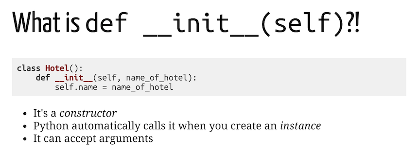
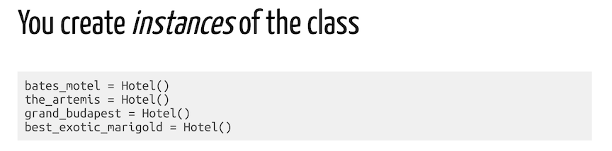

Rules of Thumb and Best Practices
- Variables are labels for values.
- Variable names should be descriptive but brief.
- Use '' to create an "empty" string variable and 0 to create an "empty" number variable.
- Assigning one variable to another makes a copy of that variable.
- = is known as the assignment operator and it helps to read from right to left.
- Read () from the inside out.
- Start your files with a comment regarding the purpose of the file.
- Use clear comments and variable names to make your code readable and easy to come back to.
- Chop big problems into smaller pieces and solve each piece.
- Name Boolean variables by starting with a is_ for instance is_odd.
- and / or combine Boolean values to one Boolean value.
- and is a "falsy" hunter. or is a "truthy" hunter.
- A "sequence" is a generic term for something that has an order. As a web developer, most of your time will be spent working with sequences and collections.
Branching
Conditional Branching: Use if, else, and elif to make decsions.

pass is a keyword in Python that means nothing and can be used as a placeholder.
Looping
While
While Loops: Use while to create a loop that will repeat the same commands over and over.

- Great for counting up or down.
- Use a While Loop over a For Loop when working based off user input.
- Nest While Loops to change a variable in relation to another variable.
- MAKE SURE YOU USE AND INCREMENT A COUNTER VARIABLE IN THE WHILE LOOP TO AVOID AN INFINITE LOOP.
For
For Loops: Use for and in to create a loop that will iterate through a sequence of items.
- Use For Loops when you need to visit each item in a sequence.
- Nest For Loops to change a variable in relation to another variable.
Functions
Functions are blocks of organized, repeatable code.
- Functions are variables.
- Functions can accept arguments or inputs as parameters.
- Functions should return the result instead of print the result.
- A function call is replaced by its return value.
- A function can only return one value and execution stops as soon as the return occurs.
Sequences
Lists/Arrays
- Lists in Python, Arrays in JavaScript instantiated with [].
- A generic, ordered sequence of values.
- Lists/Arrays an hold any value of any data type.
- Lists/Arrays are mutable and dynamic.
- You can access a specific element in a list/array by using the elements index value.
- Lists/Arrays can be concatenated.
- When you assign a list variable to another variable, both variables point to the same list.
Dictionaries/Objects
- Dictionaries in Python, Objects in JavaScript instantiated with {}.
- An unordered collection of terms (keys) and definitions (values).
- Dictionaries/Objects can hold any value of any data type.
- Utilize key : value pairs to map data (keys to values).
- keys and values are seperated by : and pairs are separated by ,.
Object-Oriented Programming
Classes
- Classes allow you to bundle data and functions together. 
- "Blueprints" for bundling data and functions together.
- Classes should be defined using a capital letter for the first letter.
Constructors
- Constructors define how Classes will be built. 
- Constructors run behind the scenes when an Instance of a Class is instantiated.
- Constructors allow you to customize Instances of Classes.
- Constructors can accept arguments.
Instances
- Instances inherit attributes and methods from their parent Classes. 
- Instances are stored in variables.
- Instances can be customized.
Encapsulation
- State ➡️ Attributes
- Behavior ➡️ Methods
Functional Programming
What happens inside the function stays inside the function and doesn't affect the rest of the program.